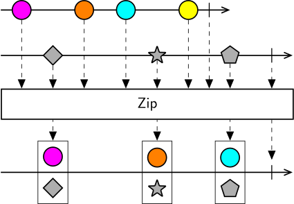
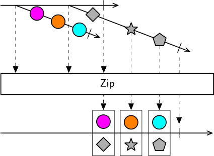

Class Zip
Represents an operator that combines values from the source sequences whenever all of the sequences have produced an element.

Zip combines the items from each sequence in strict sequential order. It will combine the first item emitted by sequence #1 with the first item emitted by sequence #2; then the second item emitted by sequence #1 with the second item emitted by sequence #2, and so forth, regardless of the timing of arrival of the values. It will only emit as many values as the number of values in the shortest sequence.
Zip can be useful to combine separate processing branches from a single source into a composite result, or when pairing events which are logically related even though they might arrive far apart in time, e.g. request/response pairs from a server, or pairing camera frames with frame trigger event onsets.
Warning
Zip will continuously store unpaired values from all source sequences, with no limit to the buffer size. This means that if one source sequence produces a much larger number of values than the other sequences, memory usage will continue to grow unbounded. In general, Zip should be used only when there is a known fixed relationship between number of elements in each of the source sequences.
Higher-order operator
Zip also works as a higher-order operator, so it can take as input a sequence of observable sequences. In this case, it will subscribe to each of the source sequences and start collecting all emitted values from each sequence. As soon as the outer sequence terminates, it will start reactively combining values in sequential order, just as in the case of using Zip with a fixed number of inputs.

The higher-order variant can be useful occasionally, for example when combining frames from an unknown number of videos in a folder, but should be used with care and awareness that reactive pairing only starts after the outer sequence terminates, which means its use should be avoided with infinite sequences.
[Combinator]
public class Zip- Inheritance
-
Zip
- Inherited Members
Methods
Process<TSource>(IObservable<IObservable<TSource>>)
Merges elements from all inner observable sequences into one observable sequence by emitting a list with the elements of each sequence whenever all of the sequences have produced a new element.
public IObservable<IList<TSource>> Process<TSource>(IObservable<IObservable<TSource>> sources)Parameters
sourcesIObservable<IObservable<TSource>>The observable sequence of inner observable sequences.
Returns
- IObservable<IList<TSource>>
An observable sequence containing the result of combining the elements of the inner sequences into lists.
Type Parameters
TSourceThe type of the elements in the source sequences.
Process<TSource>(IObservable<TSource>, IObservable<TSource>, params IObservable<TSource>[])
Merges the specified sources into one observable sequence by emitting a list with the elements of the observable sequences whenever all of the sequences have produced a new element.
public IObservable<IList<TSource>> Process<TSource>(IObservable<TSource> first, IObservable<TSource> second, params IObservable<TSource>[] remainder)Parameters
firstIObservable<TSource>The first observable sequence.
secondIObservable<TSource>The second observable sequence.
remainderIObservable<TSource>[]The remaining observable sequences to combine.
Returns
- IObservable<IList<TSource>>
An observable sequence containing the result of combining the elements of the sources into lists.
Type Parameters
TSourceThe type of the elements in the source sequences.
Process<TSource1, TSource2>(IObservable<TSource1>, IObservable<TSource2>)
Merges the specified sources into one observable sequence by emitting a pair with the elements of the observable sequences whenever all of the sequences have produced a new element.
public IObservable<Tuple<TSource1, TSource2>> Process<TSource1, TSource2>(IObservable<TSource1> source1, IObservable<TSource2> source2)Parameters
source1IObservable<TSource1>The first observable source.
source2IObservable<TSource2>The second observable source.
Returns
- IObservable<Tuple<TSource1, TSource2>>
An observable sequence containing the result of combining the elements of the sources into pairs.
Type Parameters
TSource1The type of the elements in the first source sequence.
TSource2The type of the elements in the second source sequence.
Process<TSource1, TSource2, TSource3>(IObservable<TSource1>, IObservable<TSource2>, IObservable<TSource3>)
Merges the specified sources into one observable sequence by emitting a triple with the elements of the observable sequences whenever all of the sequences have produced a new element.
public IObservable<Tuple<TSource1, TSource2, TSource3>> Process<TSource1, TSource2, TSource3>(IObservable<TSource1> source1, IObservable<TSource2> source2, IObservable<TSource3> source3)Parameters
source1IObservable<TSource1>The first observable source.
source2IObservable<TSource2>The second observable source.
source3IObservable<TSource3>The third observable source.
Returns
- IObservable<Tuple<TSource1, TSource2, TSource3>>
An observable sequence containing the result of combining the elements of the sources into triples.
Type Parameters
TSource1The type of the elements in the first source sequence.
TSource2The type of the elements in the second source sequence.
TSource3The type of the elements in the third source sequence.
Process<TSource1, TSource2, TSource3, TSource4>(IObservable<TSource1>, IObservable<TSource2>, IObservable<TSource3>, IObservable<TSource4>)
Merges the specified sources into one observable sequence by emitting a quadruple with the elements of the observable sequences whenever all of the sequences have produced a new element.
public IObservable<Tuple<TSource1, TSource2, TSource3, TSource4>> Process<TSource1, TSource2, TSource3, TSource4>(IObservable<TSource1> source1, IObservable<TSource2> source2, IObservable<TSource3> source3, IObservable<TSource4> source4)Parameters
source1IObservable<TSource1>The first observable source.
source2IObservable<TSource2>The second observable source.
source3IObservable<TSource3>The third observable source.
source4IObservable<TSource4>The fourth observable source.
Returns
- IObservable<Tuple<TSource1, TSource2, TSource3, TSource4>>
An observable sequence containing the result of combining the elements of the sources into quadruples.
Type Parameters
TSource1The type of the elements in the first source sequence.
TSource2The type of the elements in the second source sequence.
TSource3The type of the elements in the third source sequence.
TSource4The type of the elements in the fourth source sequence.
Process<TSource1, TSource2, TSource3, TSource4, TSource5>(IObservable<TSource1>, IObservable<TSource2>, IObservable<TSource3>, IObservable<TSource4>, IObservable<TSource5>)
Merges the specified sources into one observable sequence by emitting a quintuple with the elements of the observable sequences whenever all of the sequences have produced a new element.
public IObservable<Tuple<TSource1, TSource2, TSource3, TSource4, TSource5>> Process<TSource1, TSource2, TSource3, TSource4, TSource5>(IObservable<TSource1> source1, IObservable<TSource2> source2, IObservable<TSource3> source3, IObservable<TSource4> source4, IObservable<TSource5> source5)Parameters
source1IObservable<TSource1>The first observable source.
source2IObservable<TSource2>The second observable source.
source3IObservable<TSource3>The third observable source.
source4IObservable<TSource4>The fourth observable source.
source5IObservable<TSource5>The fifth observable source.
Returns
- IObservable<Tuple<TSource1, TSource2, TSource3, TSource4, TSource5>>
An observable sequence containing the result of combining the elements of the sources into quintuples.
Type Parameters
TSource1The type of the elements in the first source sequence.
TSource2The type of the elements in the second source sequence.
TSource3The type of the elements in the third source sequence.
TSource4The type of the elements in the fourth source sequence.
TSource5The type of the elements in the fifth source sequence.
Process<TSource1, TSource2, TSource3, TSource4, TSource5, TSource6>(IObservable<TSource1>, IObservable<TSource2>, IObservable<TSource3>, IObservable<TSource4>, IObservable<TSource5>, IObservable<TSource6>)
Merges the specified sources into one observable sequence by emitting a sextuple with the elements of the observable sequences whenever all of the sequences have produced a new element.
public IObservable<Tuple<TSource1, TSource2, TSource3, TSource4, TSource5, TSource6>> Process<TSource1, TSource2, TSource3, TSource4, TSource5, TSource6>(IObservable<TSource1> source1, IObservable<TSource2> source2, IObservable<TSource3> source3, IObservable<TSource4> source4, IObservable<TSource5> source5, IObservable<TSource6> source6)Parameters
source1IObservable<TSource1>The first observable source.
source2IObservable<TSource2>The second observable source.
source3IObservable<TSource3>The third observable source.
source4IObservable<TSource4>The fourth observable source.
source5IObservable<TSource5>The fifth observable source.
source6IObservable<TSource6>The sixth observable source.
Returns
- IObservable<Tuple<TSource1, TSource2, TSource3, TSource4, TSource5, TSource6>>
An observable sequence containing the result of combining the elements of the sources into sextuples.
Type Parameters
TSource1The type of the elements in the first source sequence.
TSource2The type of the elements in the second source sequence.
TSource3The type of the elements in the third source sequence.
TSource4The type of the elements in the fourth source sequence.
TSource5The type of the elements in the fifth source sequence.
TSource6The type of the elements in the sixth source sequence.
Process<TSource1, TSource2, TSource3, TSource4, TSource5, TSource6, TSource7>(IObservable<TSource1>, IObservable<TSource2>, IObservable<TSource3>, IObservable<TSource4>, IObservable<TSource5>, IObservable<TSource6>, IObservable<TSource7>)
Merges the specified sources into one observable sequence by emitting a septuple with the elements of the observable sequences whenever all of the sequences have produced a new element.
public IObservable<Tuple<TSource1, TSource2, TSource3, TSource4, TSource5, TSource6, TSource7>> Process<TSource1, TSource2, TSource3, TSource4, TSource5, TSource6, TSource7>(IObservable<TSource1> source1, IObservable<TSource2> source2, IObservable<TSource3> source3, IObservable<TSource4> source4, IObservable<TSource5> source5, IObservable<TSource6> source6, IObservable<TSource7> source7)Parameters
source1IObservable<TSource1>The first observable source.
source2IObservable<TSource2>The second observable source.
source3IObservable<TSource3>The third observable source.
source4IObservable<TSource4>The fourth observable source.
source5IObservable<TSource5>The fifth observable source.
source6IObservable<TSource6>The sixth observable source.
source7IObservable<TSource7>The seventh observable source.
Returns
- IObservable<Tuple<TSource1, TSource2, TSource3, TSource4, TSource5, TSource6, TSource7>>
An observable sequence containing the result of combining the elements of the sources into septuples.
Type Parameters
TSource1The type of the elements in the first source sequence.
TSource2The type of the elements in the second source sequence.
TSource3The type of the elements in the third source sequence.
TSource4The type of the elements in the fourth source sequence.
TSource5The type of the elements in the fifth source sequence.
TSource6The type of the elements in the sixth source sequence.
TSource7The type of the elements in the seventh source sequence.